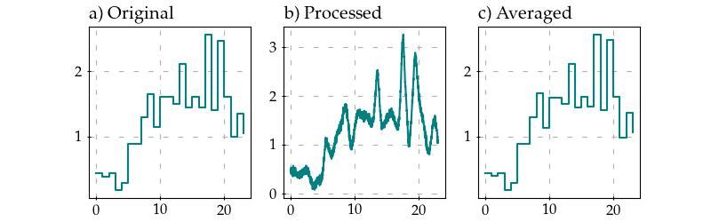

Quick start
Installation
Install package with pip.
pip install traffic-weaver
Minimal processing example
Importing Traffic Weaver.
import traffic_weaver
To obtain the same results, set numpy seed to 0.
# setting random seed to 0
from numpy import random
random.seed(0)
To load one of the local exemplary datasets, use
# load example dataset containing average measurements over 1 hour
data = traffic_weaver.datasets.load_dataset('sandvine_tiktok')
print(data.T)
which outputs
[[ 0. 1. 2. 3. 4. 5. 6. 7. 8. 9. 10. 11. 12. 13. 14. 15. 16. 17. 18. 19. 20. 21. 22. 23. ]
[ 0.45 0.4 0.45 0.2 0.3 0.9 0.9 1.3 1.65 1.15 1.6 1.6 1.5 2.1 1.45 1.6 1.45 2.55 1.4 2.45 1.6 1. 1.35 1.05]]
The traffic_weaver provides Weaver class that serves as an API to other processing
capabilities. :code: Weaver.from_2d_array(data) factory takes time series of independent and
dependent variables as 2D array.
# create Weaver instance
wv = traffic_weaver.Weaver.from_2d_array(data)
Further signal processing is applied through Weaver methods. Most of the methods return instance to the Weaver itself, allowing for chaining processing commands.
# process it creating samples every minute
wv.oversample(60).integral_match().smooth(1.0).noise(snr=30)
To obtain created new time series call either Weaver.get() or
Weaver.to_function(). The former one returns list of created points, and
the latter one spline function created based on those points and allow to sample any point.
x, y = wv.get()
print(x)
print(y)
[0.000e+00 1.667e-02 3.333e-02 ... 2.297e+01 2.298e+01 2.300e+01]
[0.504 0.447 0.477 ... 1.047 1.044 1.065]
f = wv.to_function()
print(f(0.01))
0.45616116907018994
To visualize time series, matplotlib library is required.
import matplotlib.pyplot as plt
# plot original signal
fig, axes = plt.subplots(nrows=1, ncols=3, figsize=(14, 4))
axes[0].plot(*wv.get_original(), drawstyle="steps-post")
# plot modified signal
axes[1].plot(*wv.get())
# plot averaged signal
x, y = traffic_weaver.process.average(*wv.get(), 60)
axes[2].plot(x, y, drawstyle="steps-post")
axes[0].set_title("a) Original", loc="left")
axes[1].set_title("b) Processed", loc="left")
axes[2].set_title("c) Averaged", loc="left")
plt.show()
Above code produces the following figures.
{kind=link}
It is possible to check if integrals actually match between original and processed function.
# compare integrals of original and modified signal
print("original function integral={}".format(sum(traffic_weaver.sorted_array_utils.integral(*(wv.get_original()), method='rectangle'))))
print("modified function integral={}".format(sum(traffic_weaver.sorted_array_utils.integral(wv.x, wv.y, method='trapezoid'))))
Resulting in:
original function integral=29.35
modified function integral=29.327691841128036
The small difference in integral value is a result of smoothing and adding noise.
Further processing examples
Traffic Weaver provides further methods to process time series.
import traffic_weaver
import matplotlib.pyplot as plt
import math
from numpy import random
random.seed(0)
# load example dataset containing average measurements over 1 hour
x, y = traffic_weaver.datasets.load_dataset('sandvine_tiktok', unpack_dataset_columns=True)
wv = traffic_weaver.Weaver(x, y)
# add one sample to the end to make it first sample of next day
wv.append_one_sample(make_periodic=True)
wv.recreate_from_average(60).integral_match().repeat(14).smooth(1.0).trend(
lambda x: 2 * x + 1 / 2 * math.sin(math.pi * x * 7), normalized=True).noise(snr=35)
# visualize
fig, axes = plt.subplots(figsize=(12, 4))
axes.plot(*wv.get())
plt.tight_layout()
plt.show()